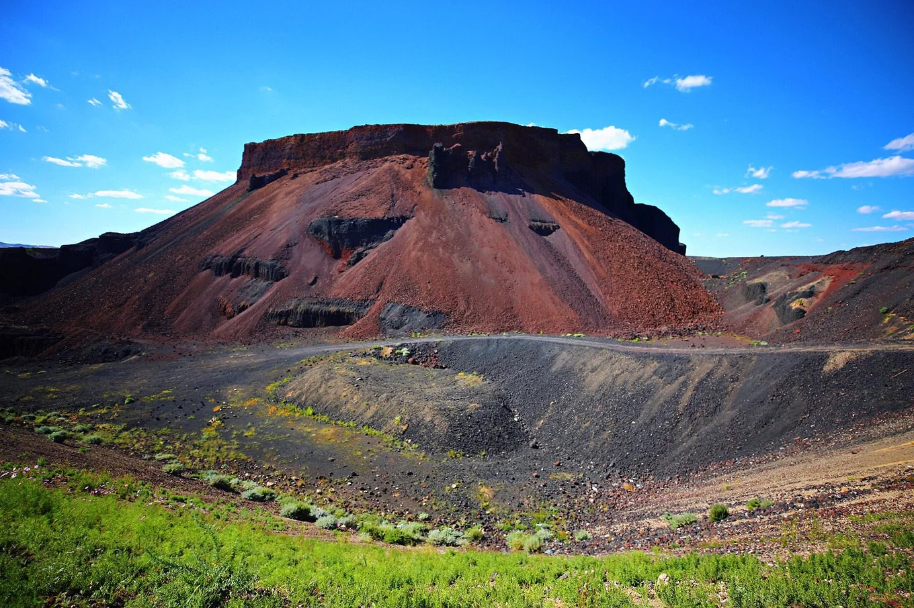

CITY 08 / 12 · BAYANNUR
巴彦淖尔巴彦淖尔市 · 塞上江南
黄河在河套放慢脚步，浇出万亩良田，也留下乌梁素海这片候鸟的水上驿站。
6.5 万 km²面积
约 152 万常住人口
21 处必游点位
3 项非遗项目
塞上江南
CITY PORTRAIT
巴彦淖尔位于内蒙古西部、黄河几字弯北缘，蒙古语意为“富饶的湖泊”。河套平原是它最核心的地理标签：黄河水在这里被引入灌区，成就了“塞上江南”的农业文明。
乌梁素海、阴山岩刻、乌兰布和沙漠与三盛公水利枢纽，把湖泊、岩画、沙漠与水利工程串成一条很特别的行旅线。
河套平原乌梁素海阴山岩刻
MUST SEE
必游景点
21 处点位，覆盖巴彦淖尔最值得走进去的自然与人文现场。点击任意一张卡片，展开完整讲解与研学提示。
LIVING HERITAGE
非遗图谱
从音乐、舞蹈到技艺与民俗。这里的每一项都不是“表演给游客看”的节目，而是仍在被传承的生活。
TASTE OF PLACE
在地风物
一座城的味道，往往比景点更接近日常。以下四样，是巴彦淖尔餐桌上最常见的坐标。
巴盟烩酸菜
酸菜、排骨与土豆的暖锅
黄河鲤鱼
河套水养出的鲜甜
华莱士瓜
磴口蜜瓜，香甜多汁
河套面食
硬质小麦，筋道麦香
ONE DAY ROUTE
两日河套 · 湖、闸与岩画
把上面的点位按时间排成一条线。不必严格照表，按你的节奏删减一站，也是一种走法。
D1 09:00
乌梁素海
乘船穿芦苇荡，观察候鸟与湿地。
D1 15:00
三盛公水利枢纽
看黄河如何被引入河套灌区。
D2 09:00
阴山岩刻
在阴山山地读北方最早的图像档案。
D2 15:00
乌兰布和沙漠
看锁边林与光伏治沙，返程。
路线提示 · 巴彦淖尔景点沿黄河与阴山分布，跨度较大；乌梁素海与三盛公可一天串联，阴山岩刻与沙漠适合另一天。
